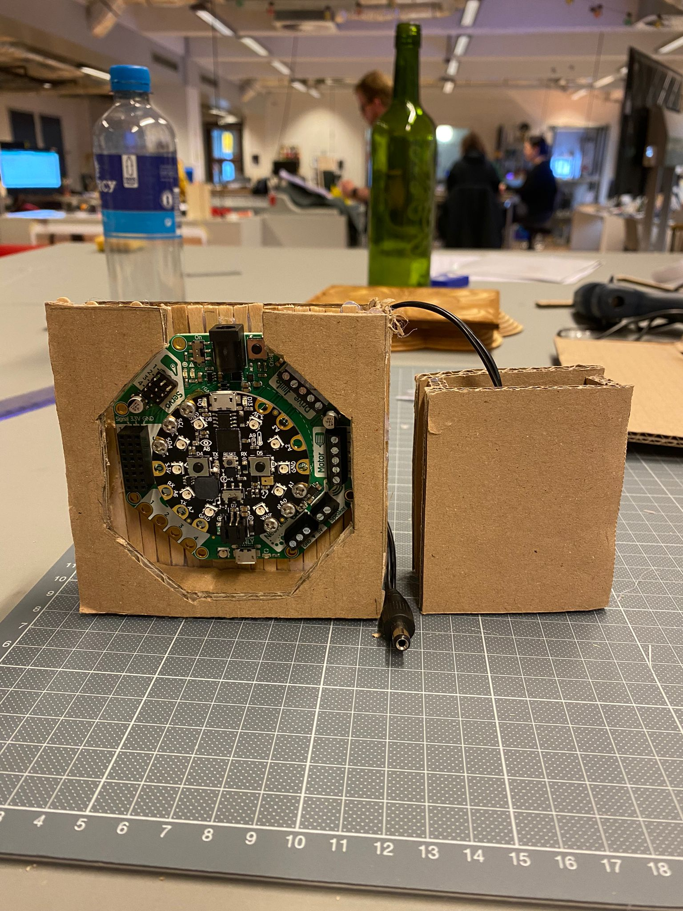
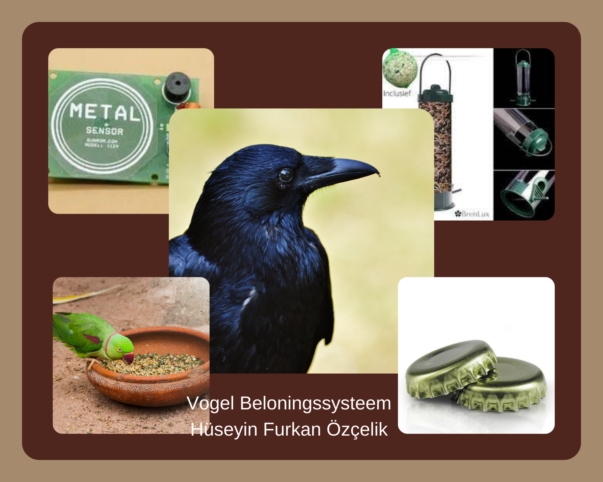

ABOUT ME
Ik ben Furkan Ozcelik (22), ik studeer momenteel aan de opleiding Creative Media & Game technologies op Hogeschool Rotterdam. Ik heb eerder een Electro techniek opleiding in het buitenland gedaan, verder vond ik mijn eerste opleiding niks en kwam er snel achter dat ik coderen leuk vind, van daar dat ik nu met deze opleiding ben begonnen.
HOBBYS
Ik heb verschillende hobby's. Ik sport graag; sporten is voor mij de ideale mix van ontspanning en inspanning.
Voetballen vind ik erg leuk; varierend van spits en middeveld.
Verder wandel ik graag. Loop ook graag lange afstanden. Dit laatste red ik gezien mijn gezondheid op dit moment echter
nog niet. Ik ben echter hard bezig mijn conditie op te bouwen; en hoop dus ooit weer die lange afstanden te kunnen lopen.
Verder ben ik van plan om naar de GYM te gaan, een gezonder leven met veel sport er in is altijd mooi!
Projecten
Al de projecten die nu of eerder gamaakt zijn, zijn gemaakt door mij en mijn vrienden. Zoals hier onder alles te zien is heb ik wel van alles gemaakt, benodigde info kan je uit de project zelf kijken.
ARCREACTOR

Deze geweldige arcreactor was gebaseerd op mijn CLE1 sprint1 partner. Als er op A gedrukt wordt gaat de timer 25min af. Als er op B gedrukt wordt gaat de timer 5min af.Als A+B gedrukt wordt zetde timer zichzelf uit.
KLİTTER WATCH
Dit is een Klitterwatch, Dit product hebben we met zijn vieren voor school gemaakt. de bedoeling van dit product is dat het multifunctioneel is. de functies zijn;
- Een klok
- Animatie
- Geluid afspelen
Vogel beloningssysteem
Dit was een van mijn eerste project voor school, een vogel beloningssysteem. het is gebaseerd op een vogel die een stukje metaal kan op pikken en door een basket kan gooien. na het gooien van een stukje metaal komt er vogelvoer naar beneden.